[1] 9.2Introducing the Normal Distribution
Ka hua ʻōlelo o ka haʻawina
kaulike
The world is shockingly normal
Let’s try an example
Run this code on your computer
Let’s try an example
If there were thousands of us and we looked at the distribution of all our samples it would look more and more perfectly normal
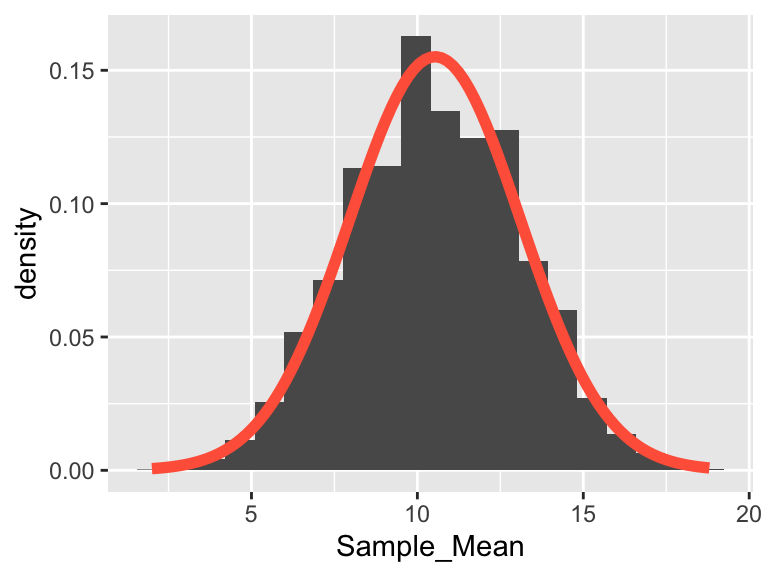
Let’s try an example
In case you are curious, here is the code for making that graphic
samps <- replicate(10000, {
s <- sample(20, 5, replace = TRUE)
mean(s)
})
dat <- data.frame(Sample_Mean = samps)
ggplot(dat, aes(x = Sample_Mean)) +
geom_histogram(aes(y = after_stat(density)),
bins = 20) +
stat_function(fun = dnorm,
args = list(mean = mean(dat$Sample_Mean),
sd = sd(dat$Sample_Mean)),
color = "tomato", linewidth = 2)The normal distribution allows many useful methods
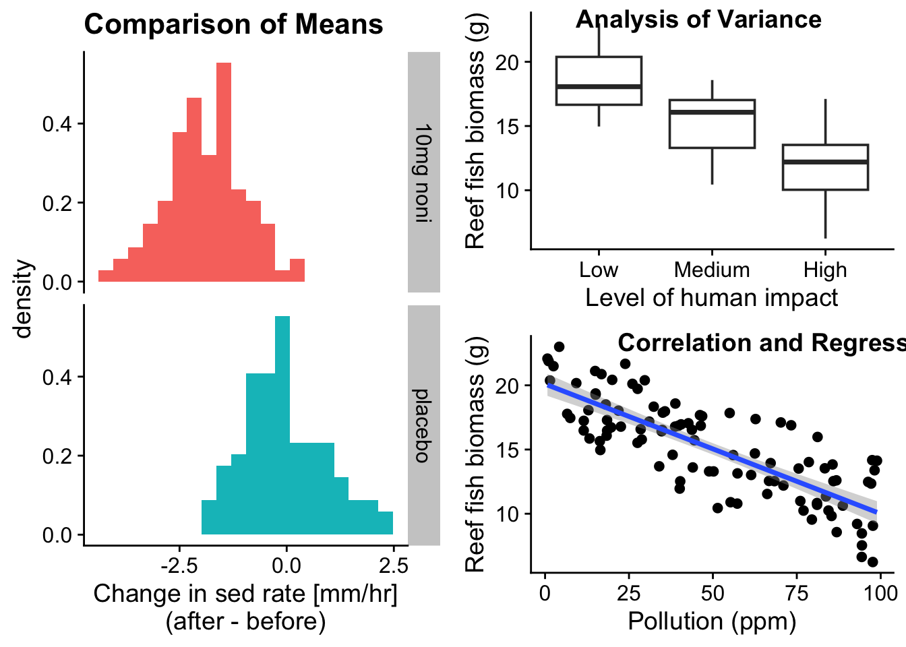
Learning goals
- Describe the properties of a normal distribution
- Know that the standard error of the sampling distribution of size \(n\) from the normal distribution equals \(\sigma/\sqrt{n}\)
- Find the probability density of a range of sample mean
- Use a Z-transform to convert any normal distribution into the standard normal distribution
- Explain why normal distributions are common, and explain the Central Limit Theorem
Normal distribution
The normal distribution is a continuous probability distribution describing a bell-shaped curve. It is a good approximation to the frequency distribution of many biological variables.
The normal distribution has two parameters, mean and standard deviation
For the population, consider a continuous random variable \(Y\) with mean \(\mu\) and standard deviation \(\sigma\)
\[f(Y) = \frac{1}{\sqrt{2 \pi \sigma^2}} e ^ {\frac{-(Y - \mu) ^ 2}{2 \sigma ^ 2}}\] \(f(Y)\) is the probability density of \(Y\). Higher probability when:
- \(Y\) is close to \(\mu\) -0The spread of the distribution is low (\(\sigma\) is small)
The normal distribution has two parameters, mean and standard deviation
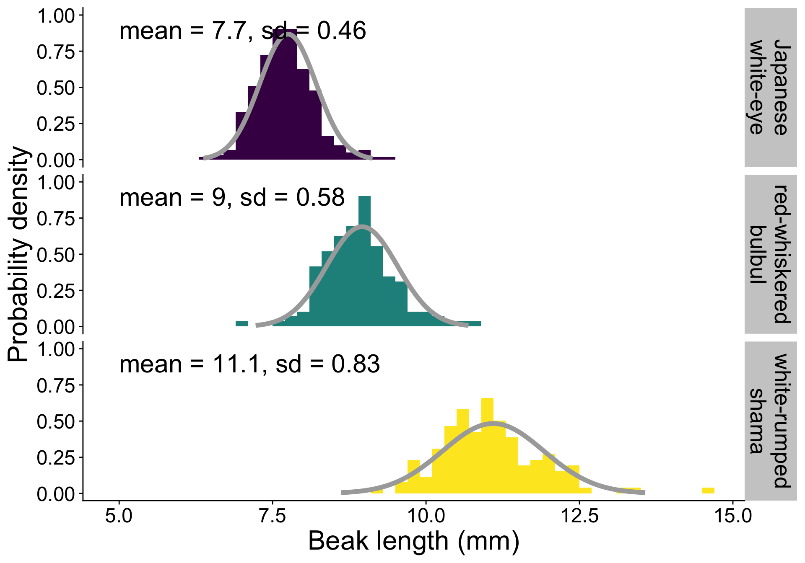
Properties of a normal distribution
- Continuous distribution
- Symmetrical around its mean
- It has a single mode
- The probability density is highest exactly at the mean
Discrete versus Continuous distributions
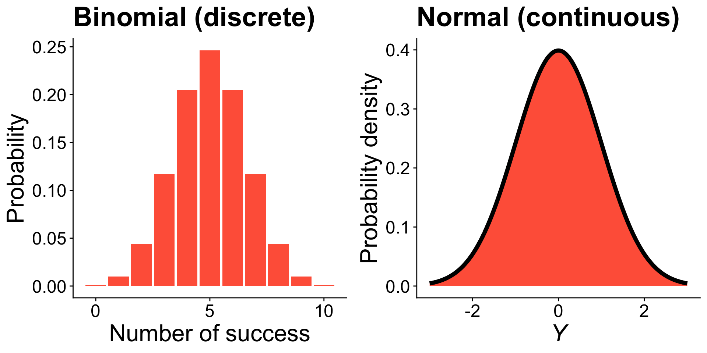
Discrete versus Continuous distributions
Discrete: Probability of 5 successes is 0.25
Continuous: Probability of \(-0.32 < Y < 0.32\) is 0.25

Symmetrical around its mean
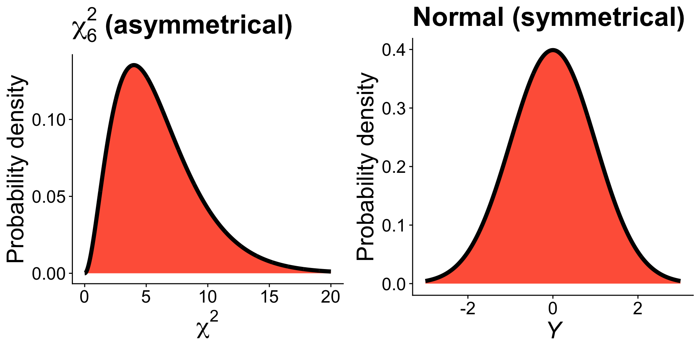
Symmetrical around its mean
Asymmetric: Probability of \(\chi^2 > \text{mean}\) is 0.42
Symmetric: Probability of \(Y > \text{mean}\) is 0.5
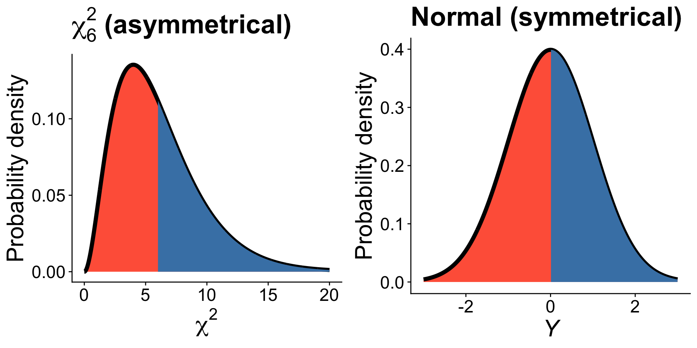
It has a single mode

The probability density is highest exactly at the mean
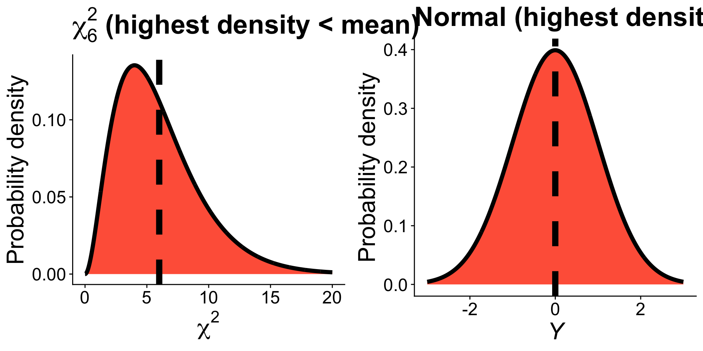
Standard error of the sample mean
The standard error is the standard deviation of the sampling distribution
If we take a sample of \(n\) from a normally distributed population with standard deviation \(\sigma\), the population standard error of the sample mean is:
\[\sigma_{\overline{Y}} = \sigma/\sqrt{n}\]
Standard error of the sample mean is \(\sigma_{\overline{Y}} = \sigma/\sqrt{n}\)
If \(\sigma = 1\), which panels show the sampling distribution of the sample mean associated with \(n = 4\), \(n = 9\), and \(n = 25\)?
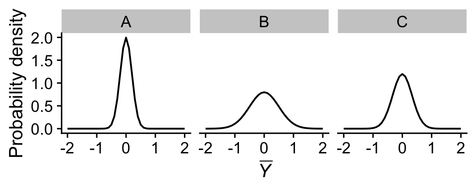
Standard error of the sample mean is \(\sigma_{\overline{Y}} = \sigma/\sqrt{n}\)
If \(\sigma = 1\)
| \(n\) | standard error of the sample mean |
|---|---|
| 4 | \(1/\sqrt{4} = 1/2\) |
| 9 | \(1/\sqrt{9} = 1/3\) |
| 25 | \(1/\sqrt{25} = 1/5\) |
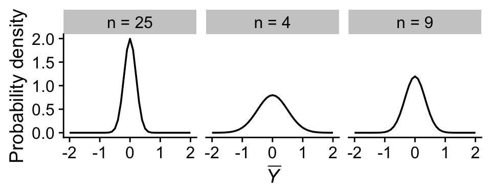
The probability density of a sample mean
If \(\mu = 0\) and \(\sigma = 1\), what’s the probability of the sample mean \(\overline{Y} = 1.0\) for \(n = 4\)?
Trick question: with a continuous variable, the probability of any exact value of \(\overline{Y}\) is infinitesimal (\(\approx 0\)).
The probability density of a sample mean
If \(\mu = 0\) and \(\sigma = 1\), what’s the probability density of the sample mean \(\overline{Y} = 1.0\) for \(n = 4\)?
We can answer this!
In R
This does NOT mean there is a 10% chance of \(\overline{Y} = 1.0\)
The probability density of a range of sample means
If \(\mu = 0\) and \(\sigma = 1\), what’s the probability density that the sample mean \(\overline{Y} \ge 1.0\) for \(n = 4\)?
Trick question: probability density is associated with a specific value of \(\overline{Y}\).
The probability of a range of sample means
If \(\mu = 0\) and \(\sigma = 1\), what’s the probability that the sample mean \(\overline{Y} \ge 1.0\) for \(n = 4\)?
We can answer this!
In R
This means there is a 2.28% chance of \(\overline{Y} \ge 1.0\)
The probability of a range of sample means
The probability density \(f(Y)\) associated with \(\overline{Y}\) is the height of the curve
The probability of a range of sample means in the area under the curve for that range
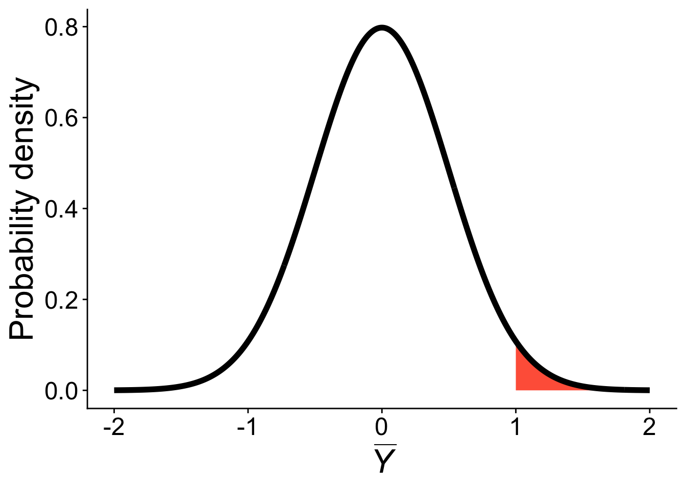
All normal distributions can be described by \(\mu\) and \(\sigma\)
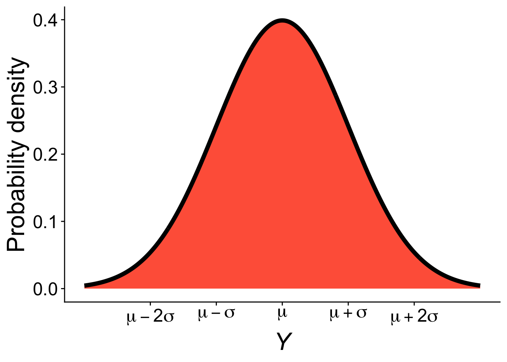
The standard normal distribution has \(\mu = 0\) and \(\sigma = 1\)
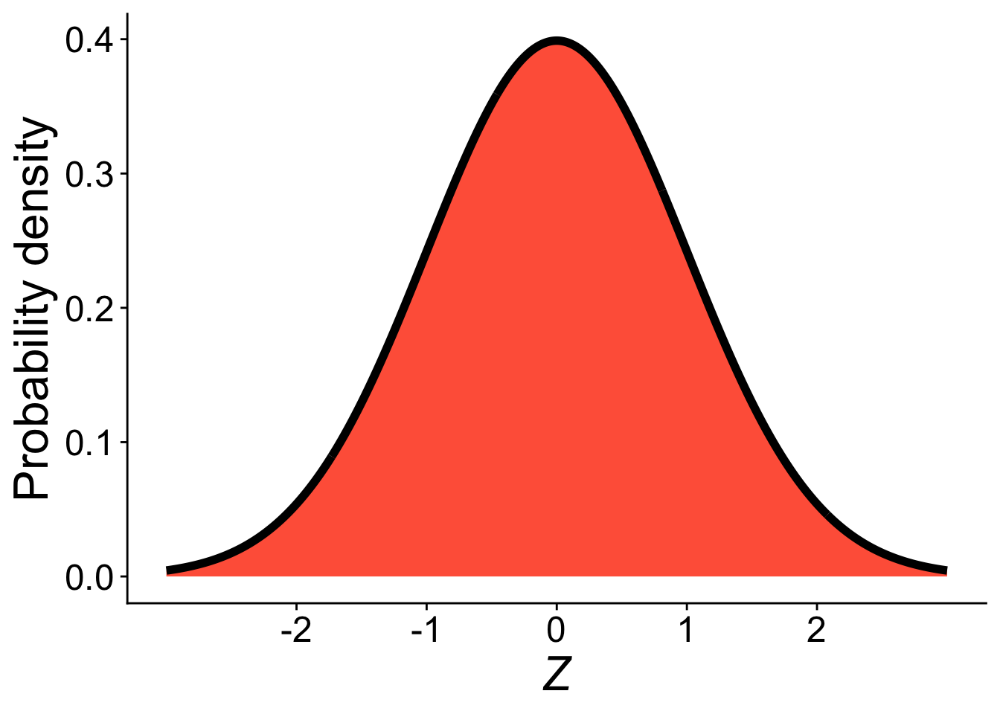
The standard normal distribution has \(\mu = 0\) and \(\sigma = 1\)
\(Z\)-transformation: transform any normal distribution to a standard normal
\[Z = \frac{Y - \mu}{\sigma}\]
\(\mu = 1\), \(\sigma = 2\)
| \(Y\) | \(Z\) |
|---|---|
| -1 | \(\frac{-1 - 1}{2} = -1\) |
| 1 | \(\frac{1 - 1}{2} = 0\) |
| 3 | \(\frac{3 - 1}{2} = 1\) |
\(\mu = -2\), \(\sigma = 3\)
| \(Y\) | \(Z\) |
|---|---|
| -5 | \(\frac{-5 - (-2)}{3} = -1\) |
| -2 | \(\frac{-2 - (-2)}{3} = 0\) |
| 1 | \(\frac{1 - (-2)}{3} = 1\) |
\(Z\): standard normal deviate
A standard normal deviate, or \(Z\), tells us how many standard deviations a particular value is from the mean
Central Limit Theorem
According to the central limit theorem, the sum or mean of a large number of measurements randomly sampled from a non-normal population is approximately normally distributed.
Why the Central Limit Theorem matters
- It explains why so many quantities are normally distributed
- When \(n\) is large, many statistical tests that assume data are normal sampling distributions work OK
- It can speed up calculations for large samples from non-normal distributions
Because of the Central Limit Theorem…
the world is shockingly normal
Run this code on your computer
Because of the Central Limit Theorem…
the world is shockingly normal
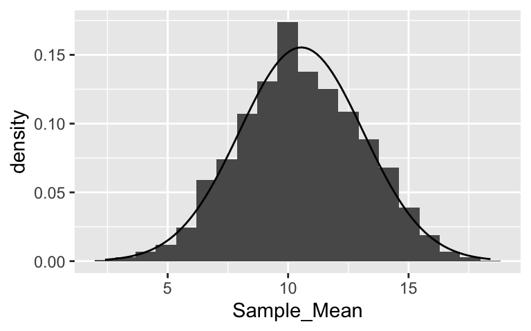
The normal distribution allows many useful methods

Learning Objectives
- Describe the properties of a normal distribution
- Know that the standard error of the sampling distribution of size \(n\) from the normal distribution equals \(\sigma/\sqrt{n}\)
- Find the probability density of a range of sample mean
- Use a Z-transform to convert any normal distribution into the standard normal distribution
- Explain why normal distributions are common, and explain the Central Limit Theorem
- Use R to make calculations about and sample from a normal distribution
- Interpret histograms and qq-plots to meaningfully evaluate if data are roughly normal
- Transform non-normal data to become normal
- Understand problematic, pseudo-scientific “applications” of the normal distribution
The normal distribution allows many useful methods

Normal distribution
The normal distribution is a continuous probability distribution describing a bell-shaped curve. It is a good approximation to the frequency distribution of many biological variables.
The normal distribution has two parameters, mean and standard deviation
For the population, consider a continuous variable \(Y\) with mean \(\mu\) and standard deviation \(\sigma\)
\[f(Y) = \frac{1}{\sqrt{2 \pi \sigma^2}} e ^ {\frac{-(Y - \mu) ^ 2}{2 \sigma ^ 2}}\] \(f(Y)\) is the probability density associated with a value \(Y\)
Higher probability when:
\(Y\) is close to \(\mu\)
The spread of the distribution is low (\(\sigma\) is small)
The normal distribution has two parameters, mean and standard deviation

Central Limit Theorem
According to the central limit theorem, the sum or mean of a large number of measurements randomly sampled from a non-normal population is approximately normally distributed.
Why the Central Limit Theorem matters
- It explains why so many quantities are normally distributed
- When \(n\) is large, many statistical tests that assume data are normal sampling distributions work OK
- It can speed up calculations for large samples from non-normal distributions
Because of the Central Limit Theorem…
the world is shockingly normal
Run this code on your computer
Because of the Central Limit Theorem…
the world is shockingly normal
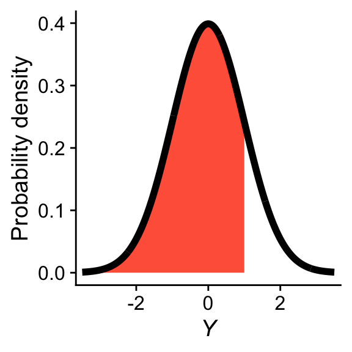
For the rest of lecture…
- Use R to make calculations about and sample from a normal distribution
- Interpret histograms and qq-plots to meaningfully evaluate if data are roughly normal
- Transform non-normal data to become normal
- Understand problematic, pseudo-scientific “applications” of the normal distribution
Use R to calculate densities, probabilities, and quantiles from normal distributions
Given a normal distribution with \(\mu = 0\) and \(\sigma = 1\), what’s the probability density of the value 1?
Use R to calculate densities, probabilities, and quantiles from normal distributions
Given a normal distribution with \(\mu = 0\) and \(\sigma = 1\), what’s the probability of a value less than 1?

Use R to calculate densities, probabilities, and quantiles from normal distributions
Given a normal distribution with \(\mu = 0\) and \(\sigma = 1\), what’s the probability of a value greater than 1?
Use R to calculate densities, probabilities, and quantiles from normal distributions
Given a normal distribution with \(\mu = 0\) and \(\sigma = 1\), what’s the 10% quantile?
Use R to calculate densities, probabilities, and quantiles from normal distributions
Given a normal distribution with \(\mu = 0\) and \(\sigma = 1\), what about all the quantiles 10%, 20%, …, 90%?
Quantile-quantile plot
A useful visual tool for assessing normality in a sample
QQ plot examples
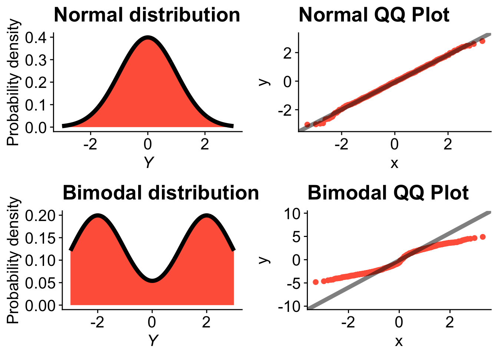
QQ plot examples
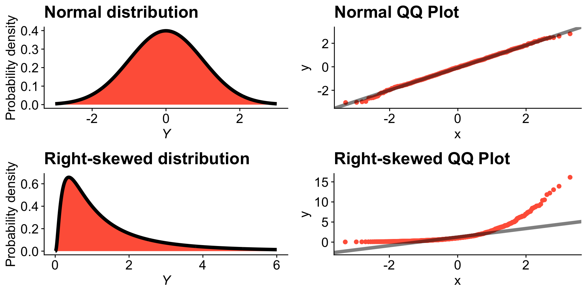
QQ plot examples
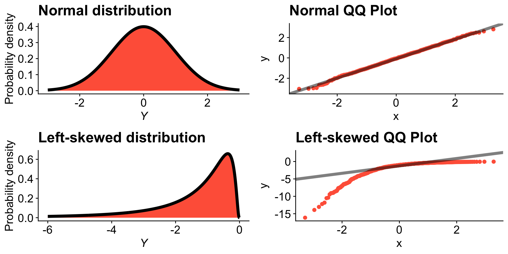
QQ plot examples
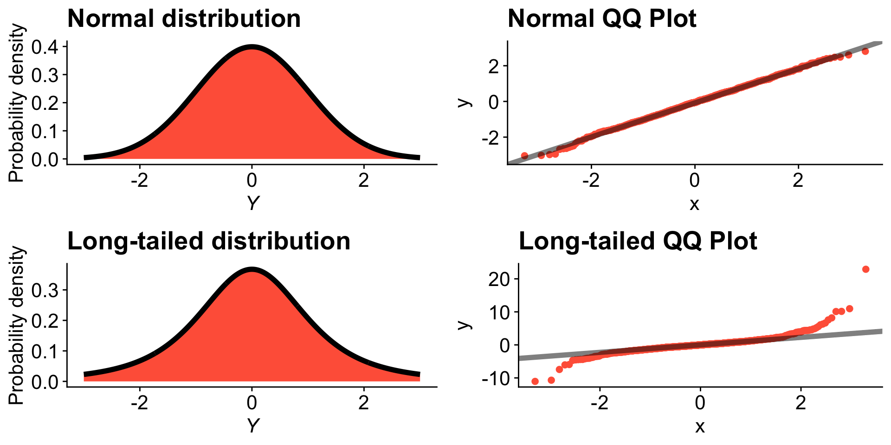
Log-transformation is very useful for right-skewed distributions
There are many transformations
Log-transformation is by the far the most useful in biology
Other situations (left-skew, long tails, bimodality) involve more complex approaches
Log-transformation is very useful for right-skewed distributions
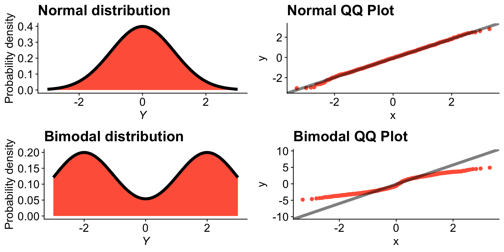
Log-transformation is very useful for right-skewed distributions
How do you log-transform your data?
Log-transformation is very useful for right-skewed distributions
How do you log-transform your data?
This is how you display a qq-plot
Log-transformation is very useful for right-skewed distributions
How do you log-transform your data?
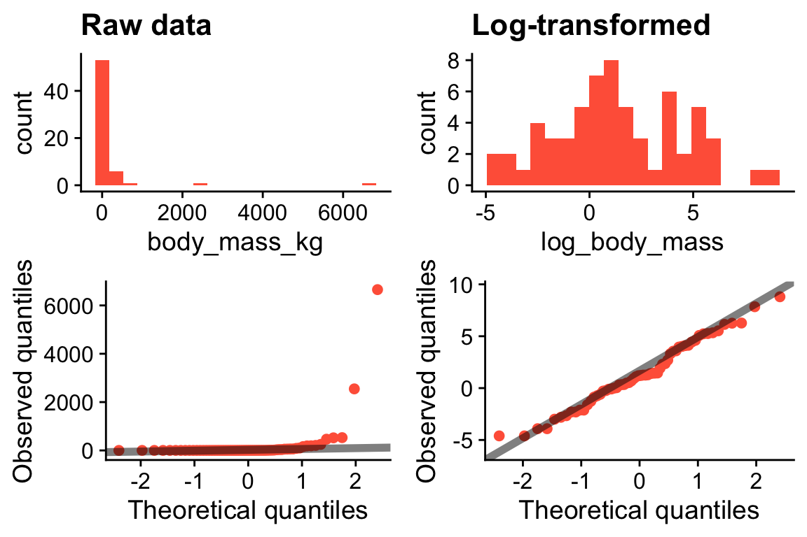
Can’t talk about the normal distribution without…
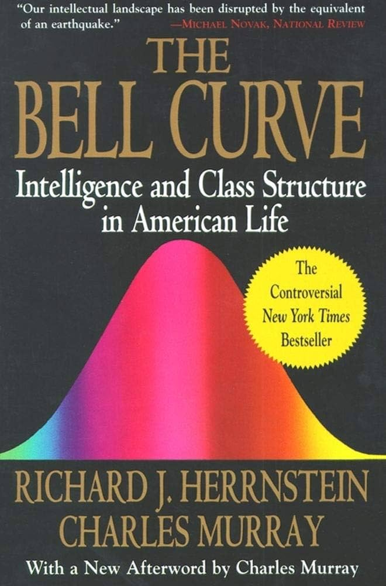
The “bell curve” and the pseudo-science of “race science”
- Claims there’s an “average man” in terms of intangible qualities like “intelligence” FALSE
- Claims “intelligence” is largely genetic FALSE
- Claims different “races” have different genetic propensities for “intelligence” FALSE
- Used to justify racism
- Why do some instructors curve grades?